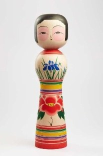

Tsugaru Ōgata Kokeshi là phiên bản Kokeshi cỡ lớn thuộc dòng Tsugaru-kei, một trong 12 dòng Kokeshi truyền thống của Nhật Bản. Dòng búp bê này được chế tác chủ yếu tại Nuruyu Onsen và Owani Onsen, tỉnh Aomori, nơi nổi tiếng với nghệ thuật tiện gỗ và sơn vẽ truyền thống.
Tác phẩm vẫn giữ những đặc điểm tiêu biểu của Tsugaru Kokeshi, như được chế tác từ một khối gỗ nguyên bằng kỹ thuật tsukuri tsuke, mái tóc ngắn, thân cân đối và các dải màu rực rỡ. Trên thân búp bê là những họa tiết hoa diên vĩ, hoa mẫu đơn cùng các đường trang trí nhiều màu, được vẽ hoàn toàn bằng tay. Kích thước lớn giúp các nghệ nhân thể hiện rõ hơn vẻ đẹp của hoa văn và kỹ thuật sơn truyền thống, biến búp bê không chỉ thành món quà lưu niệm mà còn là một tác phẩm mỹ nghệ có giá trị.
Trong văn hóa Nhật Bản, Tsugaru Kokeshi tượng trưng cho sức khỏe, hạnh phúc và cuộc sống bình an. Phiên bản Ōgata (cỡ lớn) thường được trưng bày trong gia đình, bảo tàng hoặc triển lãm như biểu tượng của nghệ thuật thủ công vùng Aomori. Với vẻ đẹp rực rỡ và kỹ thuật chế tác tinh xảo, tác phẩm góp phần giới thiệu giá trị văn hóa của Tsugaru Kokeshi và nghệ thuật truyền thống Nhật Bản đến với công chúng trong và ngoài nước.
津軽系大型こけしは、日本の伝統こけし12系統のひとつである津軽系の大型作品です。津軽系こけしは主に青森県の温湯温泉や大鰐温泉で作られており、この地域は伝統的な木地挽きと絵付けで知られています。
本作は、一本の木から作る「作り付け」の技法、短い髪、均整のとれた胴、鮮やかなろくろ線といった津軽系こけしの代表的な特徴を受け継いでいます。胴には菖蒲や牡丹の文様と多色の装飾線がすべて手描きで施されています。大きなサイズにより、職人は文様の美しさや伝統的な塗りの技をより存分に表現でき、こけしはお土産の域を超えて価値ある美術工芸品となっています。
日本文化において、津軽系こけしは健康・幸福・平穏な暮らしを象徴します。大型こけしは、青森の手工芸を代表するものとして家庭や博物館、展覧会に飾られることが多くあります。華やかな美しさと精巧な技を備えた本作は、津軽系こけしと日本の伝統芸術の価値を国内外の人々に伝えています。